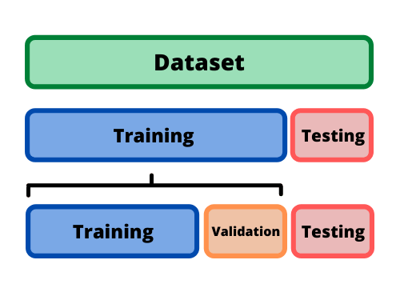
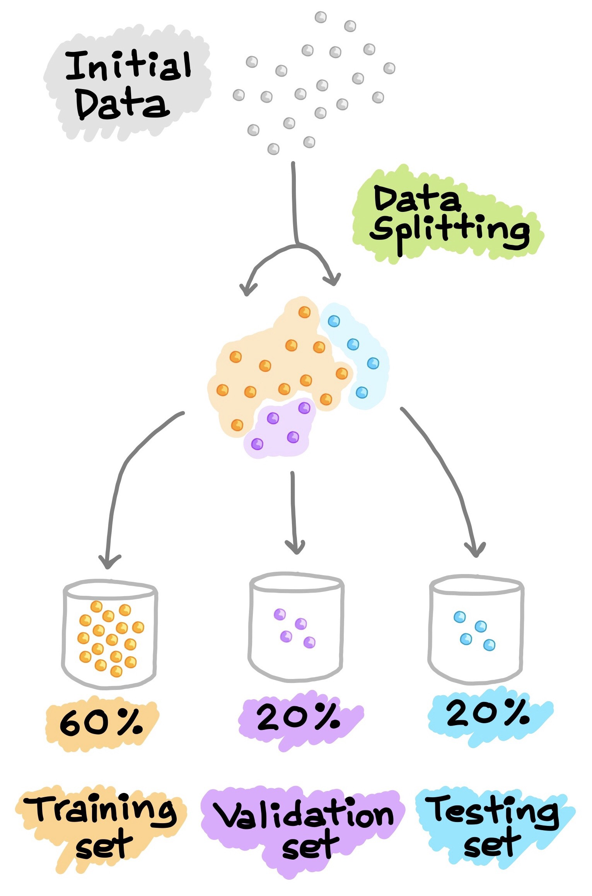

División del dataset¶
La evaluación de un modelo siempre se reduce a dividir los datos disponibles (dataset) en tres conjuntos: entrenamiento (train), validación (validation) y prueba (test).
El modelo de aprendizaje profundo se entrena con el conjunto de train y se evalúa con el conjunto de validation. Una vez el modelo esté listo, lo prueba por una última vez con el conjunto de test, este último conjunto de datos debe ser lo más similar posible a los datos de producción.
Un modelo de aprendizaje profundo nunca debe evaluarse en sus datos de entrenamiento; es una práctica estándar usar un conjunto de validación para monitorear la precisión del modelo durante el entrenamiento.
Se recomiendan tener estos tres conjuntos de datos por la siguiente razón: el modelo es entrenado con el conjunto de training, luego es ajustado con la realimentación del rendimiento proveniente del conjunto de validación. Así que podría resultar en un sobreajuste al conjunto de validación, aunque el modelo nunca se entrene directamente en él. Esto es una fuga de información. Cada vez que se ajustan los hiperparámetros en función del rendimiento del modelo en el conjunto de validación, alguna información sobre los datos de validación se filtra al modelo. Al final, obtendrá un modelo que funciona artificialmente bien en los datos de validación, porque eso es para lo que se optimizó.
En este punto entra el conjunto de testing, se evalúa el rendimiento del modelo en datos completamente nuevos, no en los datos de validación, por lo que se necesita un conjunto de datos completamente diferente y nunca antes visto para evaluar el modelo.

DataSet¶

DataSetSplit¶
import numpy as np
import pandas as pd
m = 1000
X = 20 * np.random.rand(m, 1)
y = 4 + 3 * X + np.random.randn(m, 1)
Scikit-Learn proporciona algunas funciones para dividir conjuntos de
datos en múltiples subconjuntos de varias maneras. La función más simple
es train_test_split().
from sklearn.model_selection import train_test_split
train_test_split dividirá los datos en dos conjuntos de acuerdo con
un porcentaje que se especifique test_size. Los dos conjuntos de
datos resultantes estarán barajados y no tendrán el mismo orden que el
dataset original.
Conjunto de entrenamiento:
X_trainyy_train.Conjunto de prueba:
X_testyy_test.Tamaño del conjunto de prueba:
test_size=0.2.Valor semilla:
random_state=0. En este caso el valor semilla es0, pero se puede especificar cualquier valor entero. Usar el mismo valor semilla garantiza que el proceso pueda ser replicado y obtener siempre los mismos resultados.
X_train, X_test, y_train, y_test = train_test_split(X, y, test_size=0.2, random_state=0)
X[0:5]
array([[11.65642536],
[ 1.93256514],
[ 3.68117968],
[18.04920372],
[ 8.61064578]])
X_train[0:5]
array([[ 1.32336972],
[18.38951783],
[ 1.58989663],
[ 9.58283849],
[16.661155 ]])
X_train.shape
(800, 1)
X_test.shape
(200, 1)
Con estos dos conjuntos de datos, puede ajustar su modelo, volver a entrenarlo, evaluarlo, ajustarlo nuevamente.
Utilice X_train y y_train para entrenar el modelo y ajustar los
hiperparámetros.
Utilice X_test y y_test para evaluar el rendimiento del modelo.
Será el conjunto de validación.
Una vez que haya ajustado sus hiperparámetros, es común entrenar su modelo final desde cero con todos los datos disponibles que no sean de prueba (conjunto de train más el conjunto de validación).
Luego de tener un modelo ajustado, consiga otro conjunto de datos para evaluarlo nuevamente, este nuevo conjunto será el conjunto de test.